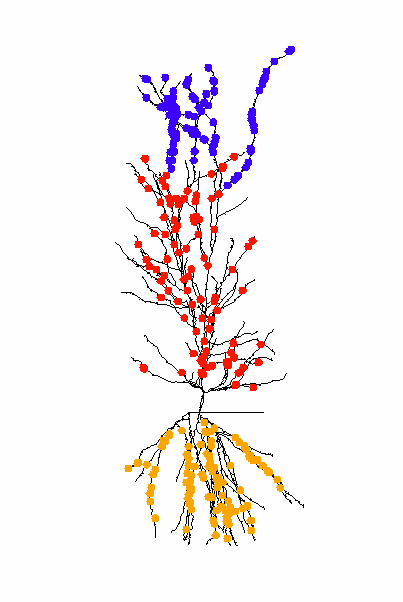
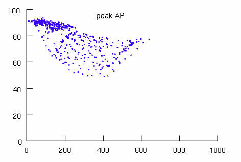
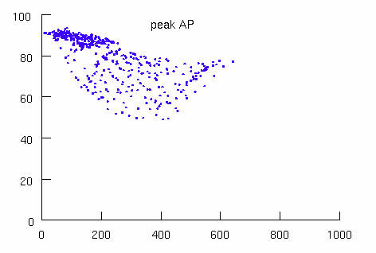

Synaptic input to a CA1 pyramidal cell
--------------------------------------
Bruce P. Graham 5-5-14
Code underpinning the paper: B.P. Graham, A. Saudargiene and S. Cobb,
Spine head calcium as a measure of summed postsynaptic activity for driving
synaptic plasticity. Neural Computation, in press, 2014.
Abstract:
We use a computational model of a hippocampal CA1 pyramidal cell to
demonstrate that spine head calcium provides an instantaneous readout
at each synapse of the postsynaptic weighted sum of all presynaptic
activity impinging on the cell. The form of the readout is equivalent
to the functions of weighted, summed inputs used in neural network
learning rules. Within a dendritic layer, peak spine head calcium
levels are either a linear or sigmoidal function of the number of
coactive synapses, with nonlinearity depending on the ability of
voltage spread in the dendrites to reach calcium spike threshold. This
is strongly controlled by the potassium A-type current, with calcium
spikes and the consequent sigmoidal increase in peak spine head
calcium only present when the A-channel density is low. Other membrane
characteristics influence the gain of the relationship between peak
calcium and the number of active synapses. In particular, increasing
spine neck resistance increases the gain due to increased voltage
responses to synaptic input in spine heads. Colocation of stimulated
synapses on a single dendritic branch also increases the gain of the
response. Input pathways cooperate: CA3 inputs to the proximal apical
dendrites can strongly amplify peak calcium levels due to weak EC
input to the distal dendrites, but not so strongly vice versa. CA3
inputs to the basal dendrites can boost calcium levels in the proximal
apical dendrites, but the relative electrical compactness of the basal
dendrites results in the reverse effect being less significant. These
results give pointers as to how to better describe the contributions
of pre- and post-synaptic activity in the learning rules that apply in
these cells. The calcium signal is closer in form to the activity
measures used in traditional neural network learning rules than to the
spike times used in spike-timing-dependent plasticity (STDP).
Code:
run_PC.hoc - main file for running simulations with a GUI (also
accessible from mosinit.hoc)
run_batsyn.hoc - file for running batches of simulations
Instructions:
Run run_PC.hoc and do the following:
First notice that an image showing the Figure 1 placement of the
spines on the dendrites is displayed:

To reproduce voltage responses illustrated in Figure 1:
1. set number of synapses to 0 for each dendritic layer (Synapses
GUI).
2. set IClamp[0] amp to 1.5 nA.
3. select "Shape plot" in the "Shape plot" window to visualise
dendritic voltage.
3. click "Init & Run" in RunControl to run simulation for 200 msecs.
4. click Dendrites under "Max voltage plots" in plots GUI to see the
decline with distance of the membrane voltage following spike
initiation in the soma.
 5. reduce the density of KA channels in the dendrites to 0.01 mS/cm^2
in the "Ion Channels" GUI.
6. rerun the simulation and replot the voltage to see the reduced
decline with distance.

To reproduce spine head calcium and voltage traces as in Figure 3:
1. set IClamp[0] amp to 0 nA and KA to 0.03 mS/cm^2 (if necessary)
2. select the number of synapses to be activated in each layer eg 100
in "CA3 apical" (SR) and 0 in "CA3 basal" (SO) and 0 in EC (SLM) to
match Fig. 3 you can activate up to 500 synapses in each layer, with
every synapse receiving a single presynaptic input at 50 msecs).
3. run simulation and calcium concentration and voltage in one of the
SR synapses (index 0) will be plotted in Graph[2] and Graph[1],
respectively (the other traces in these windows are for an SO synapse
(index 500) and an SLM synapse (index 1000).
4. try reducing KA to 0.01 and rerunning the simulation to see the
effects of increased "cooperation" between the active synapses.
Run run_batsyn.hoc to do the following:
To generate curves of mean peak spine head calcium versus number of
active synapses (as in many of the figures in the paper), run the
file: run_batsyn.hoc. This will carry out multiple simulations with
different numbers of active synapses (currently set to increments of
20 up to 500 in SR; but this can be changed by editing the file and
setting the "obvious" parameters). When the batch of simulations
finishes and graph window will appear: right-click on this and set
"View=plot" to see the calcium versus "number of synapses" curve (see
e.g. Figure 2).
20150524 Update from Ted Carnevale: Changed integration method from
euler to derivimplicit which is appropriate for simple ion
accumulation mechanisms. See Integration methods for SOLVE statements
http://www.neuron.yale.edu/phpBB/viewtopic.php?f=28&t=592
5. reduce the density of KA channels in the dendrites to 0.01 mS/cm^2
in the "Ion Channels" GUI.
6. rerun the simulation and replot the voltage to see the reduced
decline with distance.

To reproduce spine head calcium and voltage traces as in Figure 3:
1. set IClamp[0] amp to 0 nA and KA to 0.03 mS/cm^2 (if necessary)
2. select the number of synapses to be activated in each layer eg 100
in "CA3 apical" (SR) and 0 in "CA3 basal" (SO) and 0 in EC (SLM) to
match Fig. 3 you can activate up to 500 synapses in each layer, with
every synapse receiving a single presynaptic input at 50 msecs).
3. run simulation and calcium concentration and voltage in one of the
SR synapses (index 0) will be plotted in Graph[2] and Graph[1],
respectively (the other traces in these windows are for an SO synapse
(index 500) and an SLM synapse (index 1000).
4. try reducing KA to 0.01 and rerunning the simulation to see the
effects of increased "cooperation" between the active synapses.
Run run_batsyn.hoc to do the following:
To generate curves of mean peak spine head calcium versus number of
active synapses (as in many of the figures in the paper), run the
file: run_batsyn.hoc. This will carry out multiple simulations with
different numbers of active synapses (currently set to increments of
20 up to 500 in SR; but this can be changed by editing the file and
setting the "obvious" parameters). When the batch of simulations
finishes and graph window will appear: right-click on this and set
"View=plot" to see the calcium versus "number of synapses" curve (see
e.g. Figure 2).
20150524 Update from Ted Carnevale: Changed integration method from
euler to derivimplicit which is appropriate for simple ion
accumulation mechanisms. See Integration methods for SOLVE statements
http://www.neuron.yale.edu/phpBB/viewtopic.php?f=28&t=592